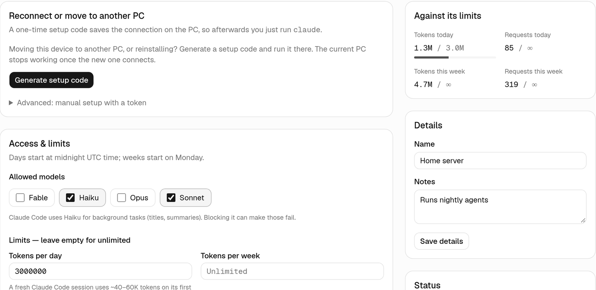

Self-hosted gateway for Claude Code · MIT
One Claude login.
A separate key for every machine.
Your subscription stays on one box on your LAN. Every other PC connects with its own revocable device token, its own model allow-list and limits, and its own usage history. Now you can see which machine used up your weekly limit.
What you set for each machine
Nothing is patched on the PC. The setup script only points Claude Code at the gateway, so plain
claude keeps working.
- Key
- A device token you can revoke from the admin at any time. Tokens and setup codes are stored only as hashes.
- Models
- An allow-list by family: Opus on the workstation, only Haiku on the automation box. New model versions are covered automatically.
- Limits
- Daily and weekly request and token quotas, requests per minute and concurrent requests. Over the limit, Claude Code shows a readable error with the reset time.
- Usage
- Input, output and cache tokens for every request, plus what they would have cost at API rates, by device, model and day.
- Capacity
- The 5-hour and weekly utilization left on your plan, read from Anthropic's own response headers.
- Audit
- Every admin action and sign-in attempt, with before and after values.


See where your capacity went
Break usage down by device, model and day. Every filter lives in the URL, so any view can be bookmarked.


Setup
You need an always-on Linux or macOS machine with Node.js 20.9+, Bun and a Claude Pro or Max plan.
-
Sign in once, on the gateway machine
TeamClaude holds your Claude login through Anthropic's own OAuth flow and listens only on loopback.
bun add -g @karpeleslab/teamclaude teamclaude login teamclaude server --headless -
Start DeviceGate next to it
One Next.js process and one SQLite file. No Redis, Postgres or Docker.
git clone https://github.com/jkugsiya/DeviceGate.git cd DeviceGate && bun install bun run init-env bun run admin create you@example.com "Your Name" bun run build && bun run start -
Add a device and run its one-liner
The admin shows a single-use code that expires in 15 minutes. PowerShell works too.
curl -fsSL http://192.168.1.50:3000/setup.sh | sh -s -- K7QM-2XPA
Services, updates and configuration are in the README.
For your own machines only
DeviceGate is built for one person and their own devices. Anthropic's Consumer Terms don't allow routing other people's requests through a Free, Pro or Max plan, so never give a device token to anyone else. Prompts and responses are never stored, and the gateway is meant to stay on your LAN or behind a VPN.